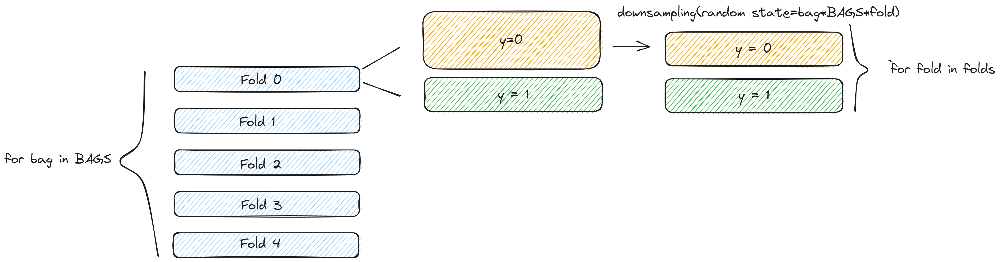

Chương 5 Các vấn đề liên quan đến dữ liệu
5.1 Xử lý dữ liệu mất cân bằng
5.1.2 Cách 2: Sử dụng phương pháp Downsample Lớp Negative
Cách thứ 2 để cân bằng các lớp là sử dụng toàn bộ dữ liệu của tập positive và chỉ sử dụng một phần của dữ liệu negative. Cách này được gọi là Downsampling. Vì chúng ta không sử dụng toàn bộ dữ liệu của lớp negative trong việc huấn luyện model, do đó chúng ta sẽ huấn luyện nhiều model với mỗi lần downsample khác nhau.
Dưới đây là code ví dụ
from imblearn.under_sampling import RandomUnderSampler
NUM_POS = df.Class.sum()
sampler = RandomUnderSampler(sampling_strategy={0: NUM_POS, 1: NUM_POS})
X_train, y_train = sampler.fit_resample(df[FEATURES], df['Class'])Hoặc có thể làm như sau cho cross validation 